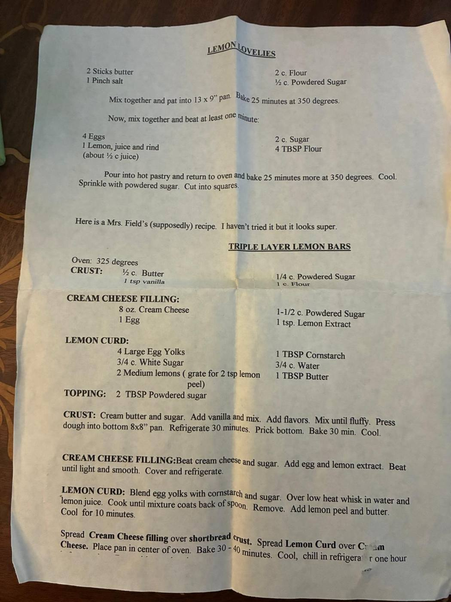

Desserts
Triple Layer Lemon Bars
From the kitchen of Mom
Oven325°F
Bake30 + 30–40 min
Pan8×8-inch

Mom's original card · tap to enlarge
Ingredients
Shortbread crust
Cream cheese filling
Lemon curd
Topping
Method tap a step to mark it done
- Crust: cream the butter and powdered sugar, add the vanilla and mix, then add the flour and mix until fluffy.
- Press the dough into the bottom of an 8×8-inch pan and refrigerate 30 minutes.
- Prick the bottom and bake at 325°F for 30 minutes. Cool.
- Cream cheese filling: beat the cream cheese and powdered sugar, add the egg and lemon extract, and beat until light and smooth. Cover and refrigerate.
- Lemon curd: blend the egg yolks with the cornstarch and sugar. Over low heat, whisk in the water and lemon juice and cook until the mixture coats the back of a spoon.
- Remove from the heat, add the lemon peel and butter, and cool for 10 minutes.
- Spread the cream cheese filling over the crust, then spread the lemon curd over the cream cheese.
- Bake in the center of the oven at 325°F for 30–40 minutes.
- Cool, then chill in the refrigerator for 1 hour.
- Dust with the powdered sugar before serving. not on card
Mom’s tips
- A Mrs. Fields (supposedly) recipe. I haven't tried it, but it looks super.